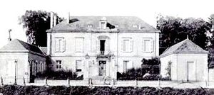
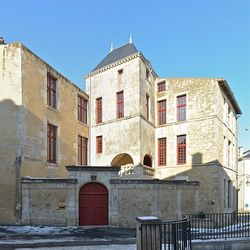
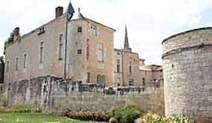
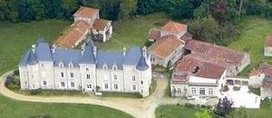
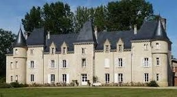
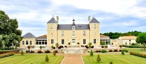
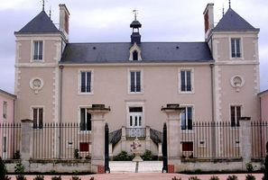
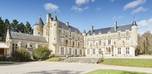

Recensement Jean-Claude Truffet
| Département | 85 — Vendée |
| Canton | Fontenay-le-Comte |
| Commune | Fontenay le Comte |
| Type d'édifice | Château |
| Période d'origine | XV-XIX |








Deux châteaux dans cet article de Fontenay le Comte celui de Baron, de Gaillard, de Sébrandière ( article suivant) et le château de Vergne à St-Hilaire des loges. La TOUR RIVALLAND, date du XIXe siècle. Ancien officier de marine et franc-maçon , Gustave Rivalland fit construire la Tour en 1880. Sa volonté de défier la flèche de l'église Notre-Dame semble accréditée par la présence de motifs maçonniques et sa position en haut de la ville, face au château de Terre-Neuve. VERGNE pas d'information historique HAUTE ROCHE, la tradition veut que le manoir de Haute-Roche ait été construit pour le médecin calviniste François Mizière vers 1571, ce qui n'est pas rigoureusement prouvé. Quant à la datation, elle s'appuie sur l'existence des dates 1567 et 1571 sur une cheminée du premier étage. Or la date 1571 n'est plus visible et l'inscription datée 1567 a été refaite par Emile Boutin en 1943, non d'après l'original mais d'après une gravure: l'inscription déposée, appartenait au XIXe siècle à Octave de Rochebrune qui l'avait gravée, fournissant ainsi un modèle à Boutin. VERGNE pas d'information historique
HAUTE ROCHE, ce manoir datable de la fin du XVIe siècle, semble avoir été construit en réutilisant partiellement une construction antérieure, comme en témoignent la tour ronde et le mur intérieur attenant. Vers 1943, le manoir fut restauré par l'architecte Emile Boutin pour le menuisier fontenaisien Eugène Fauconnier, auteur du vantail de la porte d'entrée. Boutin restitua les lucarnes en pierre de la partie à droite du pavillon d'escalier, édifia une orangerie, créa une cheminée au premier étage et une balustrade en pierre à la partie supérieure de l'escalier. TOUR RIVALLAND, construite sur un soubassement en pierre de taille, la tour est en béton sur huit niveaux, carrés puis octogonaux. Elle est surmontée d'une cage de Faraday. Des mosaïques représentant des roses, des licornes affrontées, des étoiles à huit branches, des arbustes épineux et des outils de maçon décorent les niveaux inférieurs de la tour, elle est inscrite aux M.H. depuis 1984. SEBRANDIERE, a 10 kilomètres a Le Gué-de-Velluire, le château de la Sebrandière est un ancien prieuré complètement réaménagé . Après plusieurs années de restauration le domaine retrouve son charme dantan. Cest aujourdhui une magnifique demeure réhabilitée selon larchitecture de lépoque et agrémentée de tout le confort moderne, qui ouvre ses portes au milieu dun vaste parc entouré de vignes. Le château de la Sebrandière, endroit idéal pour célébrer la réception de votre mariage. VERGNE, de plan rectangulaire à trois niveaux avec lucarnes à pinacles sur les travées, avant corps d'entrée, toit à quatre pans, cet ensemble inséré entre pavillons à droite et à gauche ces derniers accolés d'une tour ronde donnant vers l'extérieur.
Charles Eschallard de la Boulaye
"
Fontenay le Comte; 46° 27' 54" Nord et 0° 48' 42" Ouest grav 1-2-3-chateau de Baron grav-4 de Sebrandière grav-7 Vergne grav-5-6